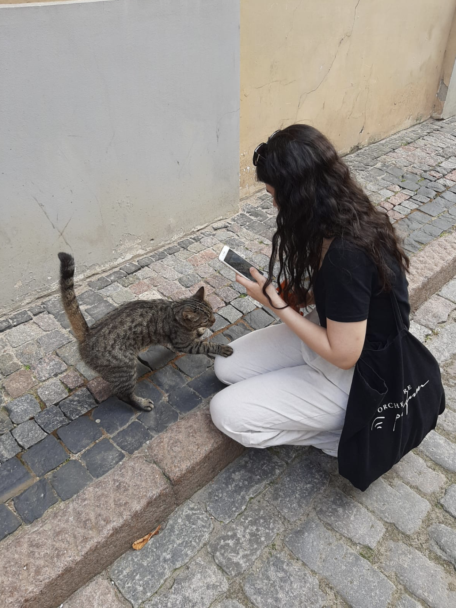
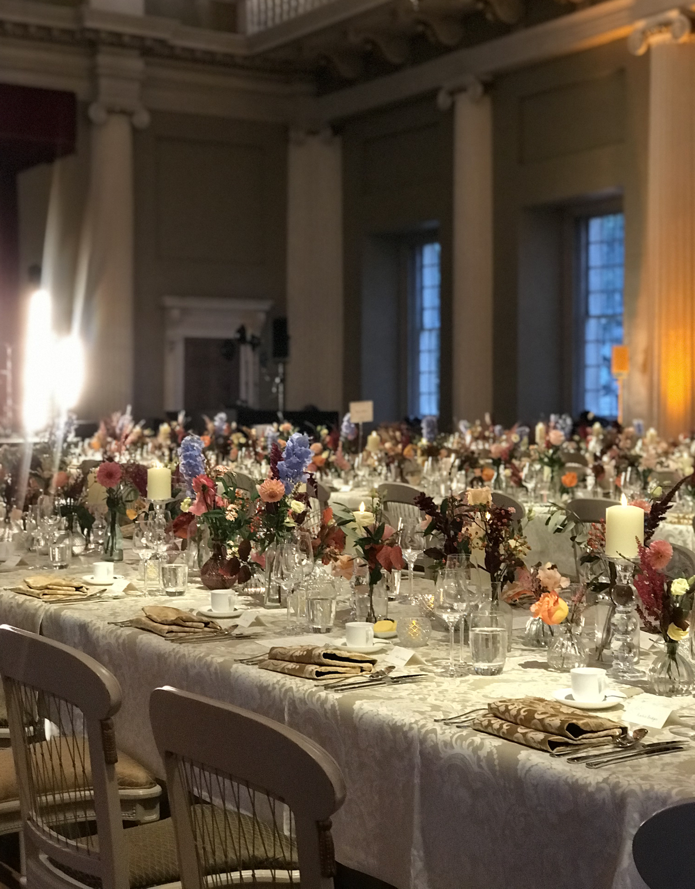

Last month, I completed my BA French and Philosophy degree at UCL and I am currently working towards becoming a software engineer through online courses. Coding is my main hobby at the moment but I also like to spend my time upcycling clothes or spending a weekend in Latvia.

Feeding treats to a sweet little cat in Riga, Latvia
My Experience

Having had 5 years of experience volunteering for charities and working in the hospitality industry, it is safe to say that I am a 'people person'. To manage relationships with business professionals and future leaders, communication skills are important, and over the years I've not only practiced these but learnt valuable lessons such as how you say something is often as important as what you say.
As for my administration skills, this webpage should give you an idea of the extent to which I am good with computers, but I also have developed plenty of organisational administration skills throughout my time at university and particularly through volunteering at Care4Calais.
My main volunteer role has been working as a translator but I have also had to manage databases containing sensitive information about refugees and asylum seekers, and also create and edit excel spreadsheets for goods distribution events.